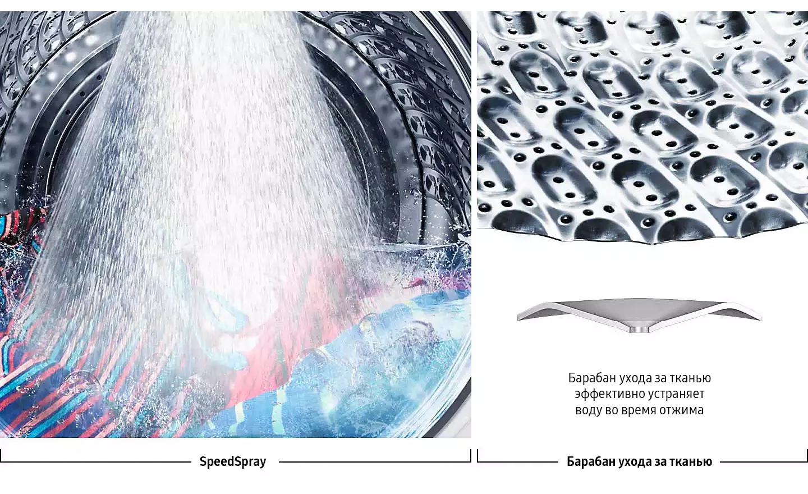

Время стирки сокращается вдвое
Технология QuickDrive™ сокращает время стирки до 50% и энергопотребление до 20%, при этом качество стирки не ухудшается. Благодаря использованию функции ‘Q-Drum™’ с основным барабаном и задней пластиной, которые вращаются независимо, обеспечивается динамичное движение одежды с удвоенной силой. За счет этого стирка становится быстрее, мощнее и мягче.*

Добавляйте любую вещь в любое время
Забыли положить рубашку? Дверца Add Wash™ позволяет быстро и легко добавить забытую одежду* после того, как цикл стирки уже начался**. Также можно свободно положить в машину одежду для ручной стирки, которую вы хотите просто прополоскать или высушить в центробежной сушилке.

Интеллектуальная забота о стирке
Функция Laundry Planner (планировщик стирки)
Интеллектуальная система управления Q-rator* повышает производительность функции QuickDrive™ за счет использования данных, полученных от взаимодействия с пользователем**. Функция Laundry Recipe рекомендует оптимальные циклы стирки***, функция Laundry Planner позволяет оптимизировать ваш график стирки****, a функция HomeCare Wizard позволяет устранять неисправности удаленно.Интеллектуальная забота о стиркеФункция Laundry Recipe (Рецепт для стирки)Интеллектуальная система управления Q-rator* повышает производительность функции QuickDrive™ за счет использования данных, полученных от взаимодействия с пользователем**. Функция Laundry Recipe рекомендует оптимальные циклы стирки***, функция Laundry Planner позволяет оптимизировать ваш график стирки****, a функция HomeCare Wizard позволяет устранять неисправности удаленно.
* Требуется учетная запись приложения Samsung, доступно на устройствах Android и iOS. Требуется подключение Wi-Fi. ** Сохраняет пользовательские данные, настройки и шаблоны использования, что позволяет предлагать полезные варианты работы. Пользователь несет полную ответственность за любые итоговые последствия функционирования машины, включая, но не ограничиваясь, любым повреждением или ущербом, вызванным предоставлением им неверной информации.****Рекомендуемый цикл стирки основан только на использовании определенного временного периода для стирки и может являться неподходящим для стирки определенных вещей на основании типа их ткани или метода их окраски.
Мощные пузырьки
Технология Eco Bubble™ гарантирует тщательное отстирывание даже при низких температурах*. Стиральный порошок превращается в пузырьки, что позволяет ему быстро проникать в ткань и легко удалять загрязнения, при этом защищая ткань и экономя энергию.**

* Тестирование проведено по нормативу IEC 60456-2010 при 4 кг загрузки, результаты сверхэкологичной стирки в холодной воде (WF80F5E5U4W) сравнивались с результатами стирки хлопчатобумажной ткани при 40°C без использования технологии Eco Bubble (WF0702WKU). Отдельные результаты могут отличаться.** На основании отчета о лабораторном тестировании эффективности, проведенном компанией Springboard Engineering, которое исследовало действие обычного моющего раствора и «пузырьковой» технологии без механического воздействия на полосках EMPA.
Стирка за 39 минут
Программа Super Speed позволяет выполнять ежедневную стирку вещей всего за 39 минут. Технология QuickDrive™ сокращает время стирки за счет динамичного движения одежды, а функция Eco Bubble™ обеспечивает ее мощную очистку. Время полоскания также сокращается благодаря использованию функции Speed Spray и схемы барабана Swirl+ Pattern*, а также увеличению скорости вращения.

* Протестировано на стиральной машине с барабаном †Swirl+ Pattern†, сравнение проводилось с барабаном Samsung Swirl с использованием внутренних данных тестирования
Сохранение свежести внутри стиральной машины
Функция Eco Drum Clean+ позволяет выполнять очистку внутри стиральной машины, при этом без использования агрессивных химикатов уничтожается 99,9% бактерий*, вызывающих запах. Данная функция даже автоматически уведомляет вас о необходимости чистки машины**.

* Уничтожает 99.9% бактерий, находящихся внутри стиральной машины. Основано на тестировании цикла Eco Drum Clean+ стиральной машины WW8800M**, проведенном компанией Intertek. Обеспечивается уведомление пользователя после каждых 40 циклов стирки.
Интенсивное удаление пятен
Технология «пузырькового» замачивания позволяет отстирать различные виды трудновыводимых пятен нажатием одной кнопки. Одежда тщательно замачивается в активных пузырьках, поэтому любые загрязнения и пятна разрушаются и удаляются гораздо более эффективно*.

* Тестирование проведено по нормативу IEC 60456 в 5-й редакции при 8 кг загрузки и с использованием технологии стирки Bubble Soak (WF80F5E5U4), результаты которого сравнивались с результатами стирки хлопчатобумажной ткани при 40/60°, синтетической ткани при 60° и джинсовой ткани при 40° без использования технологии Bubble Soak (WF0702WKU).
Гигиеническая очистка
Обеспечьте действительно глубокую и гигиеническую очистку вашей одежды с помощью пара. При проведении сильнодействующего цикла очистки Hygiene Steam из нижней части барабана выпускается пар. Поэтому каждая вещь внутри барабана подвергается полному насыщению паром. Благодаря этому удаляется въевшаяся грязь и 99,9% бактерий и инактивируются аллергены.

*На основании отчета о тестировании, проведенном компанией Intertek, при загрузке 3 кг белья и очистке по программе Hygiene Steam (WW10M864QOA).
Надежность и производительность
Технология Digital Inverter использует сильнодействующие магниты в двигателе для обеспечения более бесшумной и эффективной работы, при этом потребляется меньше энергии по сравнению с универсальными двигателями. За счет устранения подвижных щеток обеспечивается исключительная долговечность работы*, подкрепленная 10-летней гарантией**.

* Изделию был присужден сертификат Ассоциации электрических, электронных и информационных технологий в Германии (Verband Deutscher Elektrotechniker – VDE) на 23-летний срок службы.
Тихая стирка
Технология VRT Plus™ сокращает уровень шума и вибраций при проведении стирки*. Трехмерный датчик вибраций обеспечивает балансировку барабана в пространстве посредством вращения 14 шариков из нержавеющей стали в направлении, противоположном перемещению массы белья. Даже при медленном вращении барабана мощные магниты предотвращают появление незаметных вибраций и шумов.
* По сравнению с обычной стиральной машиной Samsung без технологии VRT Plus.
Долговечная производительность
Нагревательный элемент Ceramic Heater+ имеет новый тип антиадгезионного покрытия, которое сокращает образование накипи по сравнению с обычными керамическими нагревателями*. Его патентованная конструкция** обеспечивает сокращение образования накипи, что препятствует возникновению теплопроводности. Благодаря этому нагревательный элемент сохраняет свою эффективность в течении более длительного периода времени и обладает повышенной прочностью.
* Тестирование проведено на нагревательном элементе Ceramic Heater + по сравнению с обычным нагревательным элементом в составе стиральной машины Samsung WF60F4E0N0W/ET. Результаты тестирования основаны на независимой проверке изменения веса нагревателя в жесткой воде.* Номер заявки на патент: 10-2012-0029920 в Корее, Китае, Европе и США.